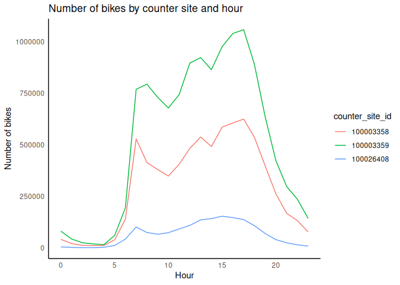

Load the data
First let’s load the data.
# Load necessary libraries
library(here)
library(readr)
library(purrr)
library(magrittr)
library(dplyr)
list.files(path = here("Projects/DrMohamedElsherif/BikeData"), pattern = "*.csv", full.names = TRUE) %>%
set_names(nm = tools::file_path_sans_ext(basename(.))) %>%
walk2(.x = ., .y = names(.), ~ assign(.y, read_csv(.x), envir = .GlobalEnv))Merge the data
The data frame bike_counts contains the number of bikes that passed through each point every hour and the weather data frame contains the weather information for each hour. We need to merge both data frames to analyze the relationship between the number of bikes and the weather. Since the data frames cointain a column with the date and hour, we can use this column to merge the data frames.
# Merge the data frames
bike_data <- merge(bike_counts, weather, by = "time")
head(bike_data)
## time bike_count channel_id counter_site_id temperature
## 1 2018-01-01 01:00:00 18 102003358 100003358 9
## 2 2018-01-01 01:00:00 3 101026408 100026408 9
## 3 2018-01-01 01:00:00 23 101003358 100003358 9
## 4 2018-01-01 01:00:00 1 102026408 100026408 9
## 5 2018-01-01 01:00:00 0 102003359 100003359 9
## 6 2018-01-01 01:00:00 0 101003359 100003359 9
## windspeed humidity heaven rain snow thunderstorms fog
## 1 9 71 5 0 0 0 0
## 2 9 71 5 0 0 0 0
## 3 9 71 5 0 0 0 0
## 4 9 71 5 0 0 0 0
## 5 9 71 5 0 0 0 0
## 6 9 71 5 0 0 0 0Explore the data to find missing values
Let’s explore the data to find missing values.
# Number of missing values
colSums(is.na(bike_data))
## time bike_count channel_id counter_site_id temperature
## 0 0 0 0 0
## windspeed humidity heaven rain snow
## 0 0 0 0 0
## thunderstorms fog
## 0 0No missing values were found, however, we only teste for NA values. We need to check if there are any other type of missing values as zeros in the channel_id or counter_site_id column
# Number of zeros in the channel_id column
sum(bike_data$channel_id == 0)
## [1] 0
# Number of zeros in the counter_site_id column
sum(bike_data$counter_site_id == 0)
## [1] 0No outliers were found in the channel_id or counter_site_id columns. We can now proceed with the analysis.
Plot the data
Lets plot the number of bikes that passed through each point every hour separating the data by counter_site_id and group by the hour of the day.
library(ggplot2)
library(dplyr)
# Extract the hour from the time column adding it as a new column
bike_data$hour <- as.numeric(format(bike_data$time, "%H"))
# Agrupar por hour y counter_site_id, y sumar bike_count
bike_data_per_hour <- bike_data %>%
group_by(hour, counter_site_id) %>%
summarise(bike_count = sum(bike_count), .groups = 'drop')
bike_data_per_hour$counter_site_id <- as.factor(bike_data_per_hour$counter_site_id)
# Plot
ggplot(bike_data_per_hour, aes(x = hour, y = bike_count, color = counter_site_id, group = counter_site_id)) +
geom_line() +
labs(title = "Number of bikes by counter site and hour", x = "Hour", y = "Number of bikes")+
theme_minimal() +
theme(panel.grid.major = element_blank(), panel.grid.minor = element_blank(),
panel.background = element_blank(), axis.line = element_line(colour = "black"))
We can see that the number of bikes that pass through each point varies throughout the day. There is a peak in the morning and another in the afternoon. The number of bikes is higher in the afternoon than in the morning.
Analyze the relationship between the number of bikes and the weather
Let’s plot the number of bikes that passed through each point every hour and the weather information. We will create a new data frame with the sum of the number of bikes by hour in all the counter sites and merge it with the weather data frame.
bike_data_weather <- bike_data %>%
mutate(time = as.POSIXct(time, format = "%Y-%m-%d %H:%M:%S")) %>%
group_by(time) %>%
summarise(bike_count = sum(bike_count), .groups = 'drop') %>%
left_join(weather, by = "time")Now we will plot the number of bikes per hour in the Y axe against the temperature in the X axe.
ggplot(bike_data_weather, aes(x = temperature, y = bike_count)) +
geom_point() +
labs(title = "Number of bikes by temperature", x = "Temperature", y = "Number of bikes")+
theme_minimal() +
theme(panel.grid.major = element_blank(), panel.grid.minor = element_blank(),
panel.background = element_blank(), axis.line = element_line(colour = "black")) In this plot we can see that the number of bikes that pass through each point increases as the temperature increases. There is a positive relationship between the number of bikes and the temperature.
In this plot we can see that the number of bikes that pass through each point increases as the temperature increases. There is a positive relationship between the number of bikes and the temperature.
We may add a linear regression line to the plot to visualize the relationship between the number of bikes and the temperature.
ggplot(bike_data_weather, aes(x = temperature, y = bike_count)) +
geom_point() +
geom_smooth(method = "lm") +
labs(title = "Number of bikes by temperature", x = "Temperature", y = "Number of bikes")+
theme_minimal() +
theme(panel.grid.major = element_blank(), panel.grid.minor = element_blank(),
panel.background = element_blank(), axis.line = element_line(colour = "black"))+
#add the R squared value
annotate("text", x = -10, y = 2000, label = paste("R^2 =", round(summary(lm(bike_count ~ snow, data = bike_data_weather))$r.squared, 4)), hjust = 0, vjust = 1)
## `geom_smooth()` using formula = 'y ~ x'
Regardless the positive relationship between the number of bikes and the temperature, the R squared value is very low, which means that the temperature is not a good predictor of the number of bikes.
We can do the same analysis with the snow column.
ggplot(bike_data_weather, aes(x = snow, y = bike_count)) +
geom_point() +
geom_smooth(method = "lm") +
labs(title = "Number of bikes by snow", x = "Snow", y = "Number of bikes")+
theme_minimal() +
theme(panel.grid.major = element_blank(), panel.grid.minor = element_blank(),
panel.background = element_blank(), axis.line = element_line(colour = "black"))+
annotate("text", x = 0, y = 2000, label = paste("R^2 =", round(summary(lm(bike_count ~ snow, data = bike_data_weather))$r.squared, 4)), hjust = 0, vjust = 1)
## `geom_smooth()` using formula = 'y ~ x'
In the case of the snow, a low R squared value is obtained, which means that the snow is not a good predictor of the number of bikes. This may be because even when it is not snowing, the stations register a low number of bikes. The reason may be related to failed sensors or other factors that are not related to the weather.
Let’s analyze if the rain is a good predictor of the number of bikes.
ggplot(bike_data_weather, aes(x = rain, y = bike_count)) +
geom_point() +
geom_smooth(method = "lm") +
labs(title = "Number of bikes by rain", x = "Rain", y = "Number of bikes")+
theme_minimal() +
theme(panel.grid.major = element_blank(), panel.grid.minor = element_blank(),
panel.background = element_blank(), axis.line = element_line(colour = "black"))+
annotate("text", x = 0, y = 2000, label = paste("R^2 =", round(summary(lm(bike_count ~ rain, data = bike_data_weather))$r.squared, 4)), hjust = 0, vjust = 1)
## `geom_smooth()` using formula = 'y ~ x'
It is interesting to notiece that in the days of rain and snow, the records of the stations are lower than in the days without rain or snow. This is because the sensors may be affected by the weather. Also it could be possible that the points are being overploted in the plot, so we may need to check the number of records for each type of weather.
bike_data_weather %>%
count(rain)
## # A tibble: 9 × 2
## rain n
## <dbl> <int>
## 1 0 40590
## 2 1 1105
## 3 2 384
## 4 3 2964
## 5 4 168
## 6 5 685
## 7 6 233
## 8 7 12
## 9 8 6As we can see, the number of records for the days without rain is higher than the number of records for the days with rain.
Let’s do the same for the snow column.
bike_data_weather %>%
count(snow)
## # A tibble: 11 × 2
## snow n
## <dbl> <int>
## 1 0 45066
## 2 1 650
## 3 2 3
## 4 3 124
## 5 4 23
## 6 6 66
## 7 7 17
## 8 8 189
## 9 9 1
## 10 10 4
## 11 11 4The number of records for the days without snow is higher than the number of records for the days with snow. This lead us to the conclusion that the weather may be affecting the sensors of the stations.